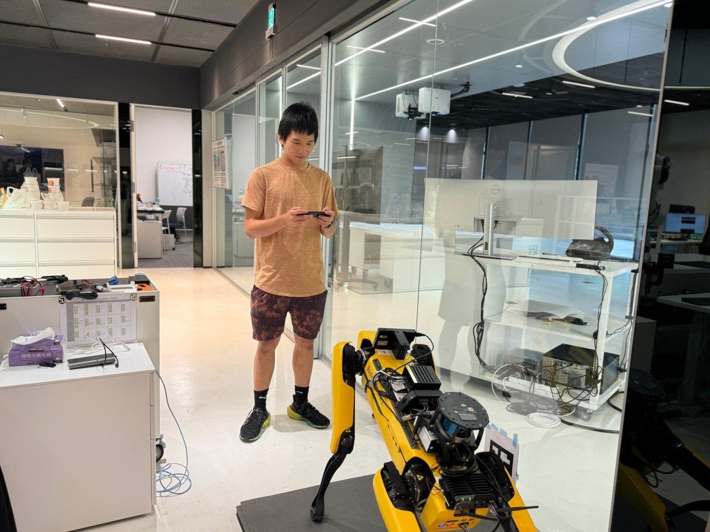
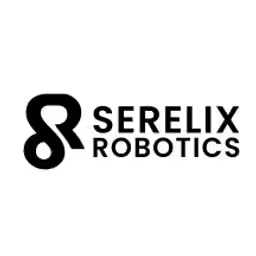
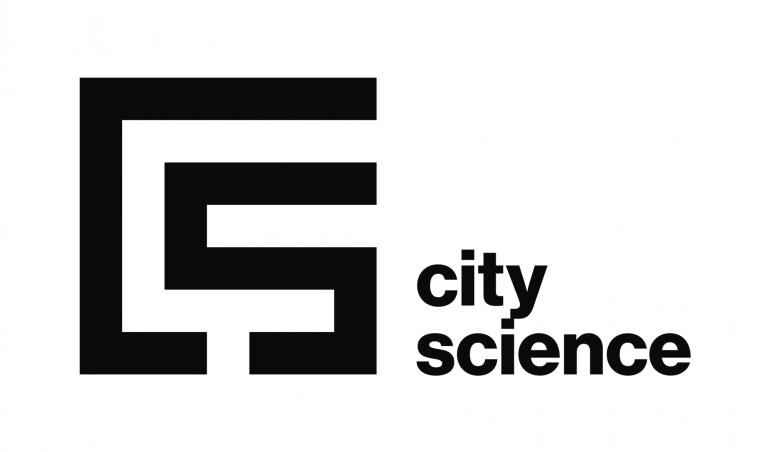

Computer engineering
Purdue University
West Lafayette, IN
Owen Chen
I build at the edge of hardware & intelligence.
I turn difficult physical systems into measurable ones—from semiconductor surfaces to robots, embedded controls, and the instrumentation between them.

Measured work
Careful measurement should end in a decision. A design should survive contact with hardware.
Selected systems
Built to move.
Built to measure.
Four systems, presented through the decisions that made them work.
Experience
Inside the work.
Research, prototyping, and controls work across cleanrooms, rehabilitation hardware, urban robotics, and motorsport.
Birck Nanotechnology Center · Purdue University
Summer Undergraduate Research Fellow
Building repeatable measurement systems for electronic component analysis across optical spectroscopy, laser profilometry, and Python-based statistical pipelines.
2026 — PresentMetrology · Python · Surface analysis
Standardized UV-Vis-NIR and laser-profilometry workflows across 30 ESP32 development boards from five suppliers, with Python pipelines for supplier-level comparison.

Serelix Robotics
Engineering Intern
Designed a tunable 3D-printed foot interface and a nine-channel pressure-sensing PCB for a post-stroke rehabilitation exoskeleton.
Summer 2025KiCad · PCB design · Rapid prototyping
Created a parametric TPU foot interface with region-specific lattice geometry and a nine-channel ADS124S08 pressure-sensing PCB.

Taipei Tech × MIT City Science Lab
UROP Researcher
Built a wheeled-bipedal robot that could dock into a quadruped, then developed its kinematics, control simulations, and power/CAN distribution board.
2024 — 2025Robotics · Control systems · CAN bus
Implemented inverse kinematics, simulated LQR and MPC strategies in MuJoCo, and designed a two-layer power and CAN-bus distribution PCB.
Purdue Formula SAE
Electronics Team Member
Developing electronic throttle-body control logic and validation procedures for a MoTeC M150 ECU, plus wiring harnesses for a custom Yamaha R6 engine-dynamometer setup.
2025 — PresentECU · Validation · Harnesses
Working on throttle-body logic, validation procedures, and documented engine-dynamometer wiring around a MoTeC M150 and Yamaha R6.
Toolchain
One system.
Many instruments.
Search the working stack and inspect how each tool fits into code, controls, CAD, hardware, or metrology.